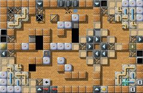
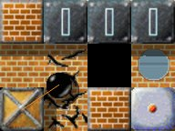
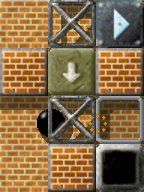
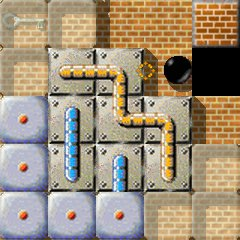
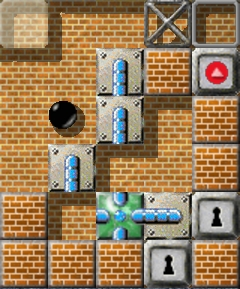
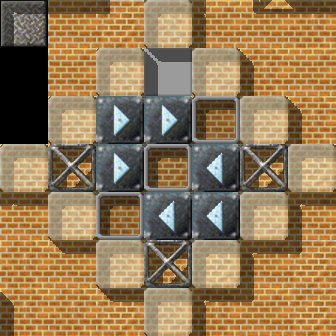
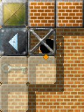

Level of the MonthEach month, we take a closer look at excellent Enigma levels. Excellent levels are those with the highest average user ratings and the greatest number of ratings altogether. Thus it is your vote that determines the Level of the Month. So please rate the levels you play and do not forget to submit your ratings together with your scores at the end of each month. You can find all previous Levels of the Month in our archive. October/November 2008: “Industrial Puzzles” by Raoul BourquinMonday morning. The alarm clock rings and wakes our marble from its dreams. Phew! Only yesterday we celebrated the happy ending of our eventful vacation far away to the South, and today we're back again to our daily grind. We'll start our first working day unhurriedly, as we are still recovering from our vacation.

Enigma VI # 98
Arriving at work, our marble first enjoys its usual morning ritual in the recreation room: Coffee and croissants. Our marble is welcomed by its two broadly grinning workmates, Frank Bongomarble and Don Van Furymarble (aka Captain Marble). After typical post-vacation banter, Frank wishes us a pleasant and leisurely first day back. Have we missed something? Do the two of them know something that our marble doesn't? Let's go to factory building 32-20 first and have a look around there. But our marble doesn't arrive. Halfway there, the boss rushes towards us completely upset: “So you're back again at long last! We tried to contact you at your holiday resort. Hey, what kept you? It doesn't matter, now you're here. We've got an emergency at shop VI/98. Nothing's working. The specialists from Cucamonga have tried for days without success to start up production again. You're our last hope!” “Marbleous! Why always me?” our marble thinks to itself, and the realization of the old Swabian proverb “Oinr isch emmr dr Arsch” (Somebody's always the resident idiot) doesn't help any further, nor do the encouraging words of the boss: “I'm sure you're very well-rested from your vacation. You can do it!” Well, if only he knew how much our marble had hoped for a restful first working day. Plant VI/98 is well-known among the employees. The building, made of beautiful red bricks, is one of the most important installations of the Marbler's Company. All technical drawings and other documents have ben destroyed by a fire in October 2007, caused by the malfunction of a laser in room 3 of plant VI/79. Apparently missing parts on the one hand, unnecessary parts on the other hand, the necessity sometimes to be blessed with three hands, actions which turn out to be fatal mistakes not until the remote future, complicated working processes: These all are things which have to be reckoned with during the repairs - and they are the reason (besides its complex and tricky construction) why VI/98 has been nicknamed “Industrial Puzzles”. The repair requires persistence, patience and a fair amount of intelligence or know-how respectively. Many things are more complicated than they seem at first sight, and some things that can be seen are … — Well, let's wait and see! Not for nothing the the repairs factor of the plant has been fixed at “75”. “The inner worth of 'Industrial Puzzles' is convincing”

After a while the authors of the LotM column have asked me again to say
some words about next month's LotM. Of course I'm happy to comply with
their request, but there's a little problem: In the meantime I've
forgotten about the solution for “Industrial Puzzles”.
But at least I can say, that although it doesn't look very impressive,
it's inner worth is convincing. What seems to be a wild conglomeration
of various stones at first glance, turns out to be a a tough nut to
crack, which makes your head go round and round. Although the size of
the level is just one screen, I spent ages puzzling over this exercise.
It's one of these levels I have to lean back contentedly and hardly can
keep back a broad smile when finally all oxyds have been opened.
Unfortunately I learned from a consultation with the level author Raoul,
that my solution wasn't in accordance with the planned course of events,
and together we discovered some more shortcuts. Fortunately these gaps
could be filled, and those of you who couldn't solve the “Industrial
Puzzles” by now, should get a move on it: It won't get easier in the
near future. ;-)
Already on its first tour of inspection our marble has to realize that it's not a matter of WYSIWYG. Without some special equipment neither will the switch in the lower right corner function nor will the brick walls transmit the laser beam. If there are two keys required indeed, a second one must be hidden somewhere. The right use of objects and cleverness when making plans are all important, not forgetting that carelessness will have dire consequences — if not immediately then later on, but inevitably. And furthermore one attempt needs to lead to success, meaning: In case of failure our marble has to start all over again. While trying to set the production in building VI/98 going again, so that the two control lights — Yes, indeed, there are only two of them! — indicate “Go!”, the “specialists” who have been at work here before us, have put some obstructions in our way, and they left — of coooourse unintentionally — some red herrings behind to put us off the scent.

Quickly we gain access to the inner area of the building, and our marble rolls towards the upper right corner. Watch out! Spoiler ahead!
Brick walls, which somehow could obstruct a laser beam, should be
investigated more closely. And hands off the triggers! We'll have
to operate them soon enough.
End of spoiler Inside a rhombus built by glass-stones an accumulation of mirrors is placed, and to the right of it we find a collection of rusty old tubes which has to be removed. The glass-stones can not be destroyed, so we'll have to push them aside. Stop! Think carefully before you do something! To be able to carry out further corrections later on, should the occasion arise, we'll have to see to it, that there's enough room to move. In principle the following procedure repeatedly has to be carried out at the other two corners of the building: Turn the mirrors to the right position, and remove the decrepit tubes. We can only get at the remaining parts if we remove the “dirt” elsewhere and let our laser bring light into the dark. On we go to the lower right area, and, same as ever: Remove rusty old tubes, push glass-stones, turn mirrors. Everything done correctly? If so, the “cleaning” may start. If not, our marble will very soon realize what went wrong and should better not be done the next time. ;-) Watch out! Spoiler ahead!
For the time being the laser beam should only cause the right oxyd stone
to open up, to make it possible to the reach the parts in the upper right
corner later on, but first of all to make the lower left part accessable
— neither more nor less! More will not be told. :-))
End of spoiler “'Industrial Puzzles' was the very last level that I solved”
I wrote the following in the “Level of the Month” article of February:
“I admire Raoul Bourquin very much”, and now I'm very pleased to hear
that once again he's being honored with a “Level of the Month” award,
for the third time by now after “Quadropolis” and “Puzzle Puzzles”,
and I really feel glad for him.
“Industrial Puzzles” was the very last level that I solved of all the
levels of Enigma, and for this reason it's still strongly left in my
mind. There were 25 unsolved levels in difficult mode by the beginning
of December 2007, and I thought that I could solve all of them
before the year was over. Eventually, I wasn't able to reach the goal
because of 4 hateful levels, but at least I could catch up with
Taztunes in “Easy Mode” in the “Solved Level Statistics” of December
2007. The new year began, and I solved JuSt's “Designed With Love”,
Jacob Scott's “Parish Fair” and Ulf Stegemann's “Oxyd 28”, and at last
there was only one unsolved level remaining: “Industrial Puzzles”.

Now, “Industrial Puzzles” has a beautiful symmetrical structure
without any waste — it is deeply worked out indeed. The level contains
various items and stones, for example a magic wand, keys, a closed
vortex, a mail-stone, puzzle-stones, and a rubberband-stone. They
troubled me. What on earth was necessary to solve this level?
Fortunately, I knew that the level was a one-screen-level because of
the “End of the Year Awards”, and this decreased the number of
my various ideas: For example a closed vortex will not need to be
opened, and even if laser beams lead to the outside of the screen,
nothing will happen. So, if you can continuosly decrease the number of
possibilities by a process of deduction, you will find the answer at
some future date, and if it is never found, you ruled out one or more
possibilities by mistake, or the level requires special “knowledge”
that you don't know yet.
Well, I played the level again after an interval of several
months, and then I noticed that indeed there's certain knowledge
required. Please become aware of this yourself, and if you do so, you
should be able to map out a course of action to be confident of solving
the level.
At last, I solved the level, and achieved 100% solved. It was a very
long way. Although I stopped walking on my way once or twice, I came back
to life and started walking again, because Enigma is such an attractive
game. It took me two years and six months until I reached the goal at long
last. Now, I stay here at the finishing line, and wait for the second
player who achieves the final goal.

VI-98
Now our marble is ready to attend to the lower left part of the level. First of
all: 'Clearing out'. What's this?! We find a small (welcome) surprise. Where,
how and when do we have to use it? With the help of the laser we lighten up this
area and get access to the spare part we need to patch up a nearby damage.
Now, finally, we find out whether we were foresighted enough, when we worked in
the upper right area. No? No wonder; preoccupied with the memories of the
'heroic deeds' during the vacation—the meanwhile far, so far away
vacation—preoccupied with the hopes for a calm start of work. So we have
to start over again from the veeery beginning, to do it better this time. Most
of what seemed idle, delusive, or just superfluous the first time, now shows
its deeper logic. For our marble, this insight comes too late, yet, at least it
now knows on what to turn its attention.

As a precaution, our marble once again goes through its check list—nothing shall go wrong this close to our goal; otherwise it sits here until deep into the night. Okay, everything checked. One last verifying look. A deep breath. Insert lever. Switch over. Activate laser. And … yeah!! Both control lights show “Go”. “I initially found this level very frustrating”
I spent a lot of time stuck in the top left corner trying to work out
what to do with the rubberband stone. Once I finally worked out how
the level was put together, and worked out what were red herrings,
I was impressed by how many tasks were squished into a single screen.
(I would love to know how Moneymaker managed to solve it in 2:11!)
After solving it, I was able to rest on my laurels … until an updated
version was submitted to the repository with some extra additions,
making me have to go back, make some changes to my strategy, and solve
it again!
Once you know how to repair it successfully, it's not that difficult at all. Until now (September 2008) less than 10% were able to fix the production machine in hall VI/98, probably because of the complexity and the demand for patience and persistence. Don't get alienated and you'll discover a level, in which—notice it's still a one-screen level—different elements are in congenial relations to each other. In short, a real top ten hit! Apropos low solution rates: Maybe the cause for this is located somewhere completely different: People have uttered, off-the-record that the vortex provides access to the sacred halls of the enigma world, to one of the well hidden orange oxyds. Have some really some succeeded in opening the vortex and entering the deepest depths? According to well informed quarters this quest is doomed to failure. Quite to the contrary, they recommend to forget this immediately; too many got lost during the search and disappeared forever … So don't even try it; probably it's only a myth, begotten by some diehards. “'Industrial Puzzles' — Almost impassable for 'Quadropolis' sightseeing tourists”
So now it has happened: My second difficult level called
“Industrial Puzzles” has been voted LotM. It has been mentioned
before in two LotM-articles.
With “Puzzle Puzzles” it doesn't have much more in common than
a similar name — and something very important: A similar goal!
(Besides the obligatory opening of oxydstones of the same color.)
Those of you who have played “Puzzle Puzzles” will perhaps find
themselves in a comparable situation: A restful starting place,
not too many hitches in the beginning and — no idea what's going
on. This is happening although both levels are playable in a
releatively linear way. Here additionally an overview of the whole
level is given to the player right from the start, even if some
parts are not accessable right away.

In this one-room-level, the most challenging one-screener
I've designed so far, and one of the most difficult ones
overall, once again puzzle-stones are playing a major part.
They are undoubtedly my favorite objects, and I've used them
quite often in my levels — perhaps often enough. This time
I've just placed them in the corners of the level — almost only
to appear in the role of designing elements. Almost only,
because there's something special about the visual effect of the
blue type, which may be responsible for the frustration, one or
the other player experiences close to the end, when he nearly
has solved the level …
The puzzles also played a decisive role concerning the
general design. The main idea had been well advanced. And then
a question turned up: “So once again puzzles, but puzzles
in combination with what? How can I get them into a visually
and thematically harmonizing level?” After experimenting with
some other necessary objects like mirrors, glass-stones, grates
and lasers for a while I got the idea which finally resulted in
the level's title. The main theme was found: “Industry”.
Industrial appearance is no innovation in level design, it can
be found in several games of various genres. I've enjoyed them
much in the game “Lemmings” for instance. Eventually the time
had come, to realize something like that myself.
So the question for the design of floors and walls had been
answered: bricks, lovely red bricks it ought to be! Together
with other elements like crumbling floors, cramped passages,
semi-functioning switches and dusty machine parts one by one
the picture of a beautiful but at the same time dangerous,
closed down factory hall became visible.
By now the hall is deserted and dilapidated, and like so many
things our semi-finished turnstiles are manufactured in the
Far East. But let's have a look back at the beginning of the
level's history.
As said before the level had been mentioned prior to this
report in the LotM-column — first in the story about
the historical CEL, the combined efforts project of
several level authors. And it's this venture the level's has
its roots in. So, I wanted to contribute a room to the CEL
project. Like always the format was defined to be 20x13.
To be up to standard an entrance and an exit point should be
included, because the room was supposed to be a link in a
chain. I wanted to avoid “just” to put loads of stones in the
traveller's pathway, so I had to look for other ways to make him
stay a bit longer in my room.
But the industrial quarter turned out to be almost impassable
for “Quadropolis” sightseeing tourists. And quite frankly — that
was really rather convenient for me. Now I was free to publish
the room as an individual level, and to make further additions.
There's hardly any spot, which shouldn't be carefully
investigated, and one or the other necessary object has a nice
surprise in store, if it's not collected in time.
If you've finally gathered together all parts and keys needed
to put the industrial plant into operation again, which will
bring some fresh O2 into the room in conclusion, you
should be able to enter the control room — if only this heavy turnstile
wouldn't be in such a stupid place …
“Industrial Puzzles” provides enough challenges. For his achievement, the author Raoul Bourquin earned more than one—like the Frenchman says—“chapeau”. One can only wish that we will see more such wonderful one-screen levels by him. NObby p.s.: After I solved “Industrial Puzzles” for the first time, I rated it in my first euphoria with “9”. After several inspections in production hall VI/98 I recognized that I was wrong with my initial rating. Had to correct it to “10”! — NObby Dear reader, we have a constant need for articles from you about Enigma's great levels. Please, send us any articles, even comments, you write to: enigma-devel@nongnu.org We're particularly interested in articles about the following levels:
Many thanks in advance, only your help can keep the LotM alive! Your Enigma Team |